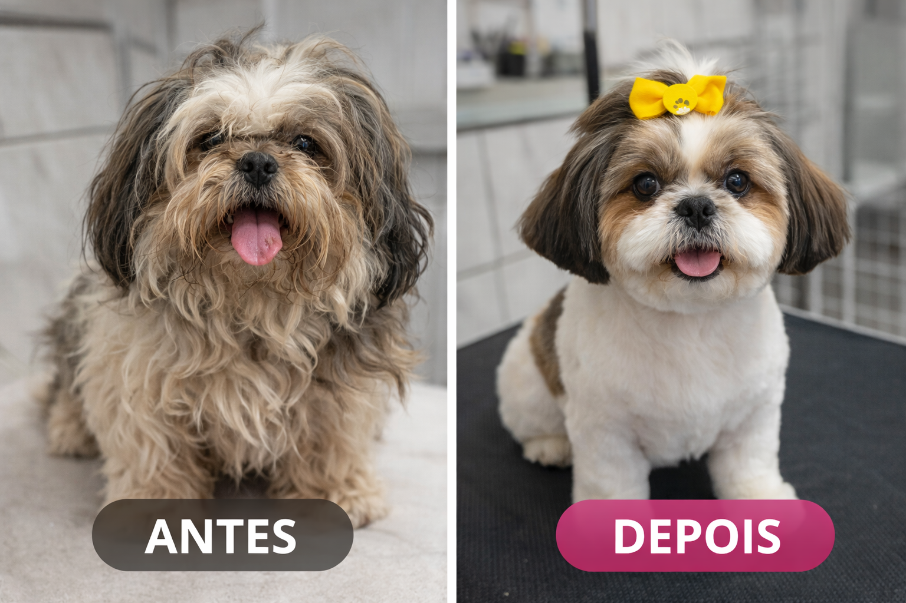
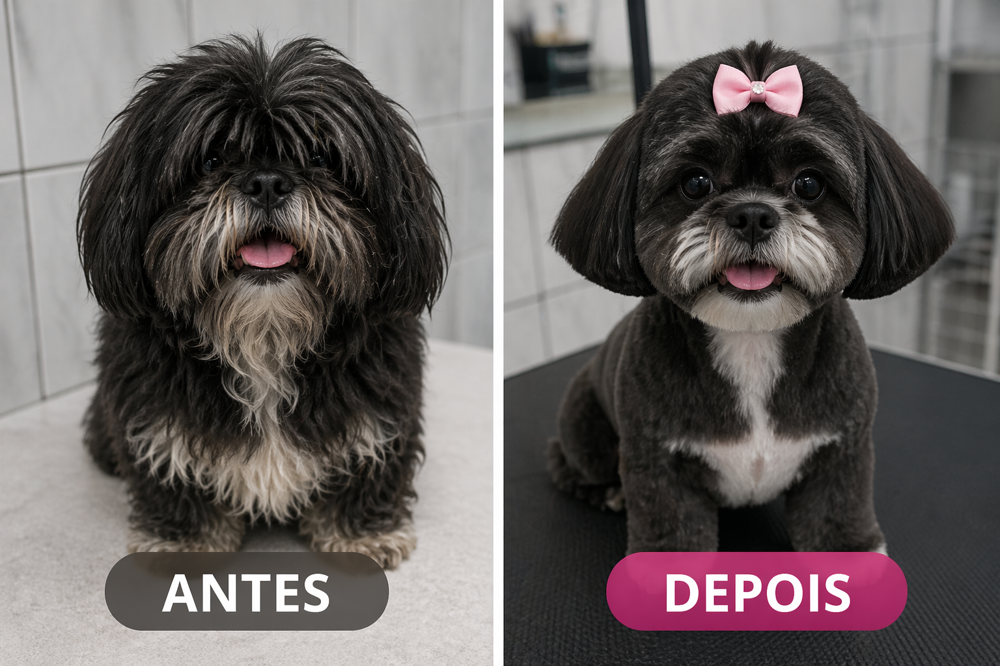
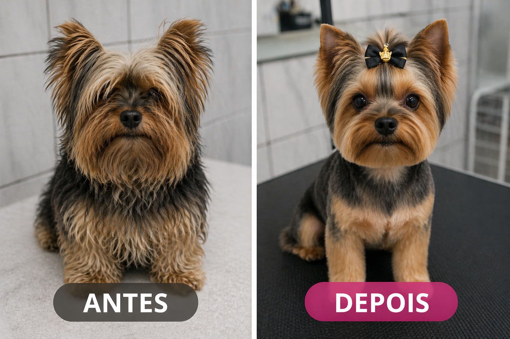
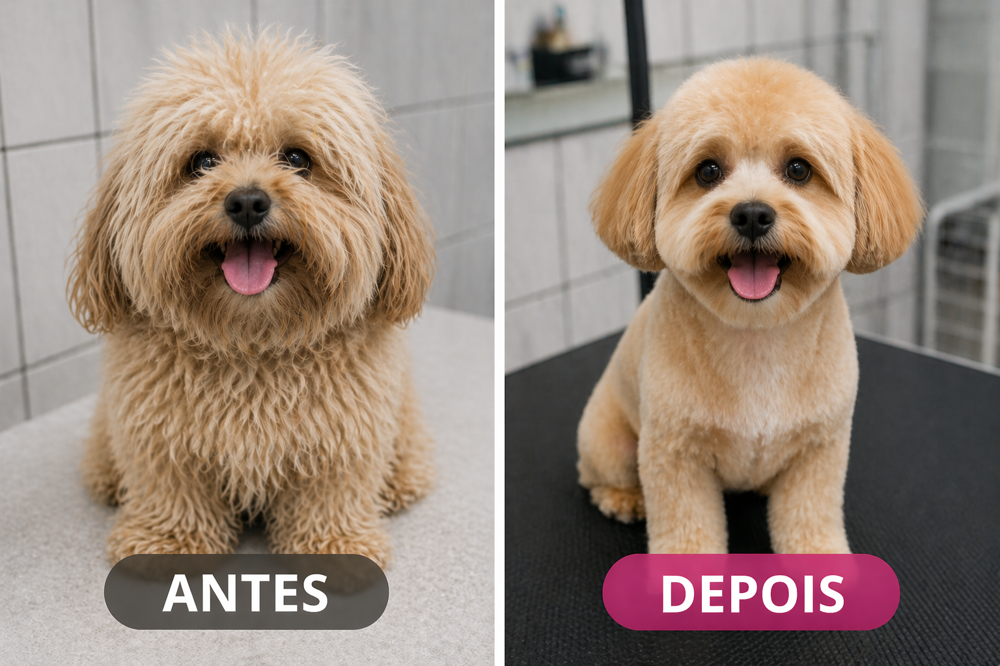

Sobre nós
A Pet Perfeito Banho & Tosa é especializada no cuidado e bem-estar do seu pet. Trabalhamos com carinho, atenção e qualidade para deixar seu amigo sempre limpo e feliz.
Localização
📍 Estrada do Tambory - Vila Merces
Carapicuíba - SP, 06386-000
Serviços
Banho e Tosa Higiênica
Esse serviço é focado na limpeza e no bem-estar do pet. Inclui banho completo e a tosa apenas nas áreas necessárias para higiene, como região íntima, patas e ao redor dos olhos. É ideal para manter o animal limpo, confortável e evitar problemas como mau cheiro ou acúmulo de sujeira.

Imagem ilustrativa
Banho e Tosa Bebê
A tosa bebê mantém o pet com aparência de filhote, deixando os pelos mais curtos, macios e com acabamento arredondado. É uma opção muito procurada por quem quer um visual fofo e uniforme, além de facilitar a manutenção do pelo no dia a dia.

Imagem ilutrativa
Banho e Tosa da Raça
Nesse tipo de serviço, a tosa segue o padrão específico de cada raça. Cada corte respeita as características originais do animal, valorizando sua aparência de acordo com o que é tradicional. É ideal para quem quer manter o pet com o visual típico da raça.

Imagem ilutrativa
Banho e Tosa Geral
A tosa geral envolve a remoção mais completa dos pelos, deixando o pet com um corte mais baixo e uniforme por todo o corpo. É indicada para facilitar os cuidados, principalmente em dias quentes ou para animais com muitos nós e excesso de pelo.

Imagem ilutrativa